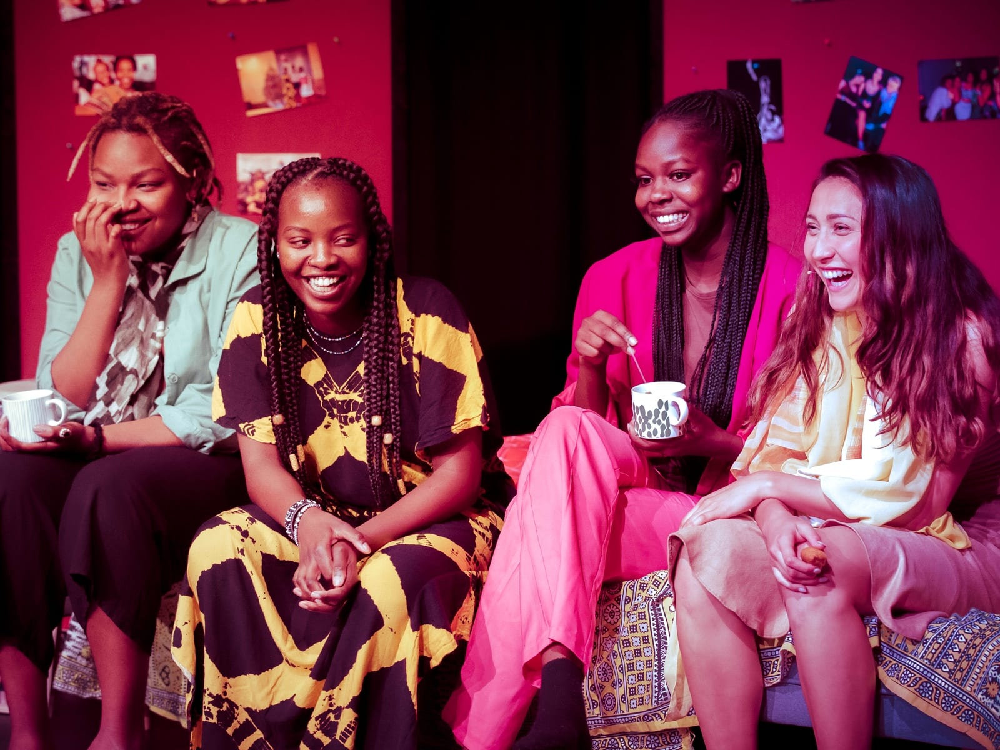
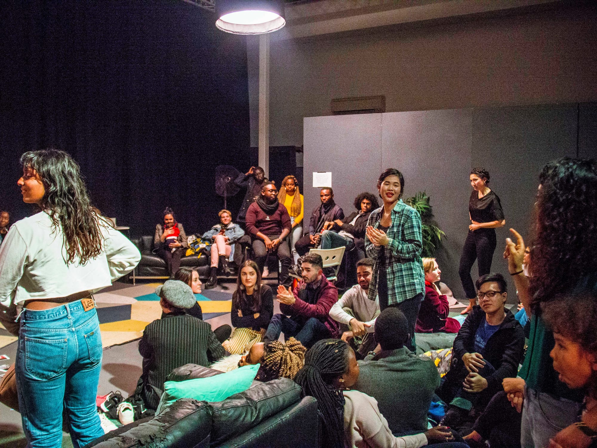
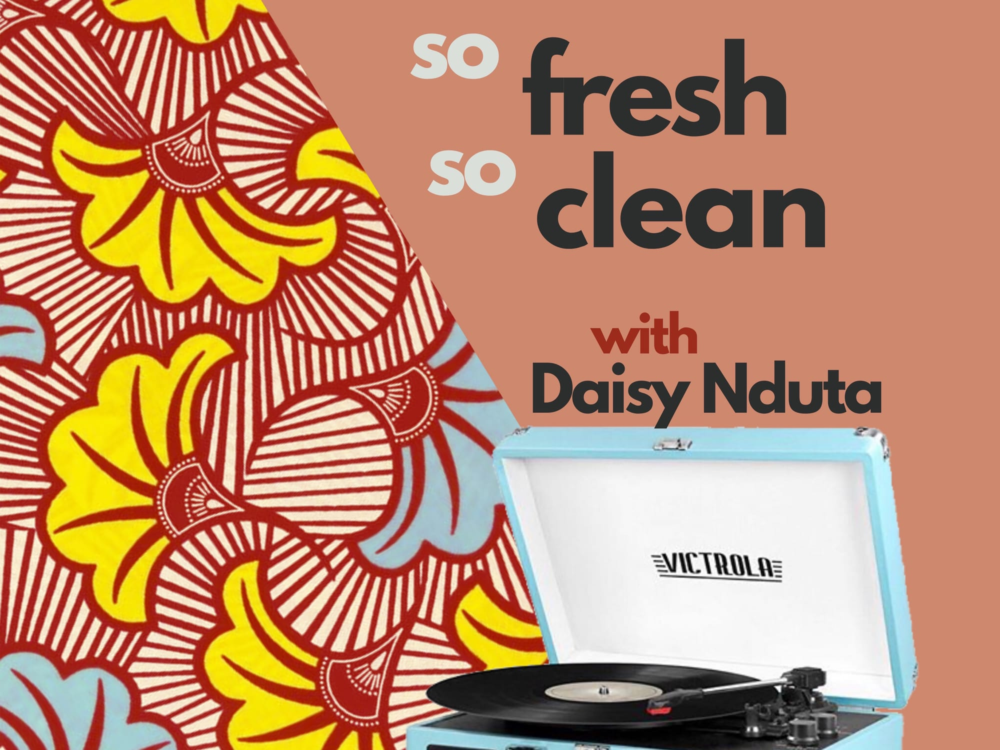
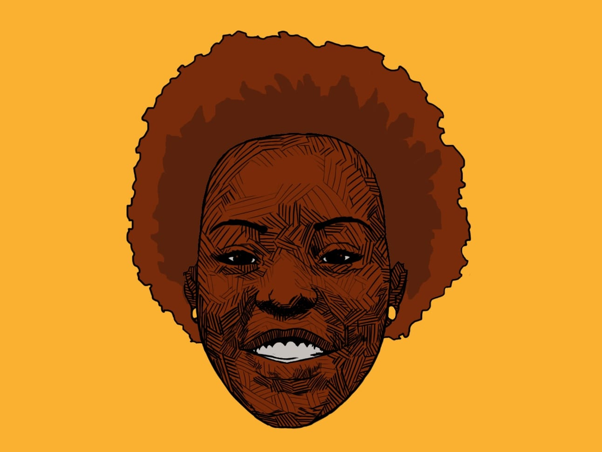

Work

2019
Multi-disciplinary performance blending movement, soundscapes, and visuals to explore cultural assimilation through the voices of four women.

2018
An audio-visual and immersive performance exploring diverse perspectives on home. Creator & Producer: Daisy Nduta.

2017–2021
I produced and hosted this radio show within the 4 years, highlighting African and Black artists across the continent and diaspora.

2017– 2022
Created and produced this freeform podcast with rotating guest hosts.